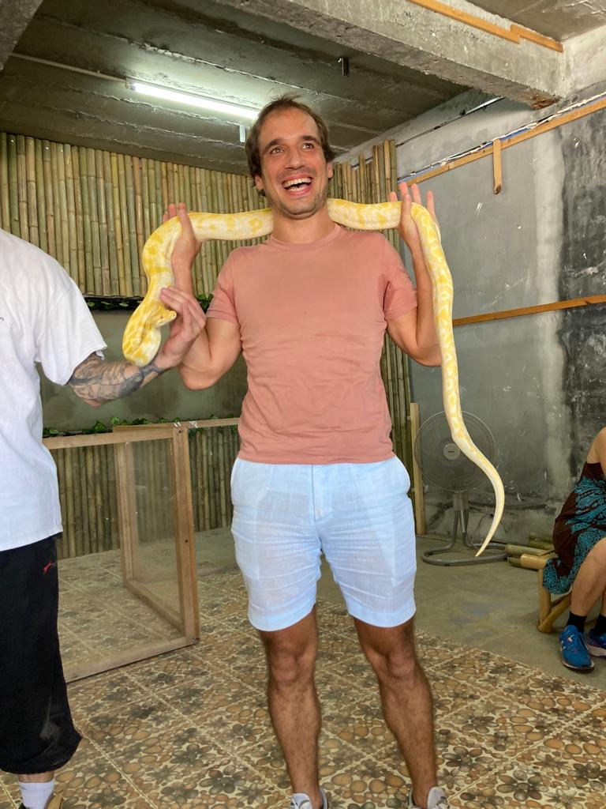

Principles
How would my 100-year-old self look back on my life?
What would he like my principles to be?
My grandfather died saying he had a fantastic life. I want to tell my grandchildren I also had a fantastic life.
So what is a fantastic life?
A fantastic life is one that brings me closer to my goals, and in which I live according to my principles.
The Principles are what this page is about.
The Goals are here.
I think long term. From the perspective of my 100-year-old self (or older)
My 100-year-old self wants me to invest in things and people which provide joy on the long term.
My-100-year old self:
(1) Has surrounded himself with great people
(2) Doesn’t depend on the government for retirement, also never retires! (principle 4)
(3) Is fit, healthy and mentally at ease (principle 10)
The Ukranian President Zelensky apparently once said there shouldn't be pictures of him in government buildings, classrooms, and other official buildings. Everyone should have a picture of their children on their desk. And think about them when making decisions.
I'm not sure if that story is true, but the idea is right. Because those are the kind of decisions I want to make.
Most of the other principles below are natural consequences of this idea.
Naval has a quite cynical tweet about children
(1) Proximity is Power
The closer you are to the people you strive to become, the faster you will grow.
Similar to the concept that you are the average of the 5 people you spend the most time with.
(2) Time is My Most Important Resource in Life
I don't want to waste time. Ever.
I will only live once, I want it to be a life worth living!
I only have 100 years* to have an amazing life doing amazing things. There is a sense of urgency to get things done!
Even if I think I have mountains of time, for almost everything, the situation can change unexpectedly at all times. I have to take action now.
I need to run at all times, I need to have a high intensity at all times.
There are only a few moments
when
that's not the case: when meditating, when reading and reminiscing notes or things I wrote in my past, when
reading fiction, when doing yoga, ...
I don't know how to clearly separate the high intensity / low
intensity
yet.
I want to go to bed being excited for the next day. Like a little child who can't sleep for excitement for Santa Claus in the morning.
* If no issues prematurely, if no life-extension breakthroughs, ...
(3) My Life is A Joyful, Adventureous Life
Life is an Adventure!
My 100-year-old self wants me to have led a joyful, energetic life. Always in a peak state. That’s why I prioritise fun.
I laugh violently, I make jokes, often bad ones.
I try to make other people smile. I try to smile a lot myself.
It's easier to solve problems in a happy, playful mood.
I want to help people have fun. I want to make a business which is fun.
I am opportunistic - My 100-year-old self doesn't want to regret not doing anything I wanted to do.
I want to take the most exciting option at all times, and I want to create exciting options at all times. Make the decision with the better story.
I believe my mental health contributes massively to my physical health. If I am unhappy, my body deteriorates, so I better be joyful!
I want to become financially successful as a byproduct of fun. Not the other way around.
I want to see people smile as the result of an interaction with me or my products. That's not easy when building digital products, because there is no in-person transaction. That's why eventually I want to build an offline lifestyle business.
I believe that with high energy and optimism I will always be able to create better opportunities to improve my life.
(4) I want to be Financially Independent
We probably need around 2 million USD if we spend 5,000 USD monthly together with my spouse after retirement. Assuming we retire at 70 and die at 100.
Frankly, I never want to retire at all. Charlie Munger and Warren Buffet are prime examples.
The biggest potential return is probably in starting a business.
I believe the best business is the one I'm passionate about.
So the path I'm following is building according to my gut feel until I stumble upon something that people want to pay for, while at the same time it's something I'm passionate about.
A Throw Until Something Sticks approach.
Newsletter #39 - The Remote Life Plan elaborates on why we need to earn independent of location.
(5) Everything has been done before
For most things in life, there is someone who has been there before.
Instead of asking what I want, I ask who I want to become.
I admire people like Tony Robbins, Richard Branson, ... who provide strong energy while maintaining a strong element of fun.
(6) I want to create opportunities through Intentional Serendipity
It's important to keep meeting people to get new ideas.
I once read a story in which one person builds behinds closed doors, while the other is always chit-chatting. The moral was that the former gets a lot more done, and the latter gets less done overall, but what he gets done is a a lot more relevant. I believe there is truth in this story.
I'm training my personality to adhere to this principle.
Other people call this increasing the surface area.
Here's my newsletter covering this
(7) Children Are Amazing!
It adds to principle 3, it makes life an even bigger adventure.
We thrive 10x in the chaos which two kids bring.
(8) I train myself to be resourceful
I want to have five solutions in my head even before reaching the Google search bar.
There's always a way, I just have to figure out (See principle 5: Everything has been done before).
(9) I want to spend time with my parents and listen to their stories
There will come a time when they are not there anymore to tell their stories.
Maybe I should write their stories?
(10) My body should be mentally and physically fit to become a 100 years old
If I want to reach the age of 100, I need to take care of my body, both physically and mentally.
Physically it requires daily exercise and a healthy diet.
Mentally it requires taking time off for myself. Time for meditation or priming, time for focused work. 15-30 minutes per day would be ideal. A weekend per half year would be fantastic.
Mentally it also requires a passion for what I do. A love and purpose. He who has a Why to live for can bear almost any How (from Man's Search for Meaning).
(11) I want to push beyond my borders
Physically and mentally by running marathons, by doing ice baths, by doing other physical challenges like the Dodentocht (Death March) or the Phuket Triathlon.
By bungee jumping in 2025. By holding a Python snake and forcing myself to smile in 2023.
Going out of my comfort zone and doing things for the first time, provides adrenaline, a feeling of being alive. And joy and satisfaction in hindsight. Once the pain has passed.
Doing new things first provides fear, and then a whole lot of energy. The short term fear holds me back from the benefits lying behind it. I need to look at how I will feel after the event, not just how I will feel on the moment of maximum fear.
(12) I want to be grateful
Gratitude is one of the strongest forces towards having a fulfilled life. We're creatures who have self-awareness, on a small spinning rock somewhere in an infinite universe, in a relative time. That in itself is a great start to be grateful!
(13) I want to be generous
The secret to living is giving. If at moments I feel I don't have enough, I donate to charity. It puts me with both feet on the ground that I have abundance.
While living in Asia, I realise I'm very lucky to have been born and raised in a European country:
(2) In a democracy where everyone can write and say what he wants (contrary to most of South-East Asia)
(3) In a family with modest financial means (contrary to many families in Thailand, let alone Laos, Myanmar, Cambodja, ...)
(4) In a country not torn apart by civil war (present day Myanmar)
I try to be generous with all people who have less than me. The bigger the difference, the more generous I should be. Not only in money, also in words and deeds.
(14) I'm the one who loses if I get angry
Getting angry towards someone takes a massive amount of mental capacity, mental capacity is being burned on choosing arguments, making statements, and digging trenches, and afterwards a visual of the situation keeps replaying in my head.
Paul Graham elaborates on this in The Top Idea In Your Mind:
Turning the other cheek turns out to have selfish advantages. Someone who does you an injury hurts you twice: first by the injury itself, and second by taking up your time afterward thinking about it. If you learn to ignore injuries you can at least avoid the second half. I've found I can to some extent avoid thinking about nasty things people have done to me by telling myself: this doesn't deserve space in my head. I'm always delighted to find I've forgotten the details of disputes, because that means I hadn't been thinking about them. My wife thinks I'm more forgiving than she is, but my motives are purely selfish.
Marc Benioff in his book Behind The Cloud, elaborates that he learned to keep calm at all times, after reading Sun Tzu's the Art of War:
He who is quick tempered can be insulted
Public Backlog
-- If there's a reason to dress up for a party, I do it! It only has advantages: Costumes are the best, playing a role is great fun, it makes it easier to strike conversation, ... Also applies for suiting up for a night out!
-- If I can make every day a great day, then I will always have had a great life!
- I want to speak in positive terms about people. It builds energy and enthusiasm in myself, people are attracted to people who bring positive energy, and it builds a positive image of myself. Apparently Richard Branson's mother would put him in front of a mirror every time he said something bad about someone, to show him how it reflects bad on him.
-- I want to be Curious. I read Surely You're Joking Mister Feynmann for a masterclass in curiosity and how it brings unexpected surprises.
-- I share Winning Stories. After a hard day at work, I try to share what went well, what I liked, what I did and how it made for a better day. I focus on the positive. People like to complain, but somehow we're still making progress, so we must be doing something right?
-- It's ok to change my mind. As long as I can explain why. Consistency is overrated.
-- I Sing and Dance whenever I can.
-- I read fiction and (auto-) biographies. Biographies help me decide how to achieve my goals (see Principle 5: everything has been done before). Fiction helps me relax, and inspires, it allows me to take on a different role and think in a different way (for example dressing up for a party). Note: Sometimes it's time to stop reading and start doing. It's a difficult balance. If I'm only reading and speaking to people I know the latest trends, ideas, on which I can build. If I'm only building and never getting inputs I'm probably building in a vacuum.
-- I don't eat in airplanes.
-- If I can't decide the answer is "no". Decisions should be "hell yeah" or "no".
-- I just want to build fun stuff (though earning 100+ USD per hour is tempting).
-- Always volunteer